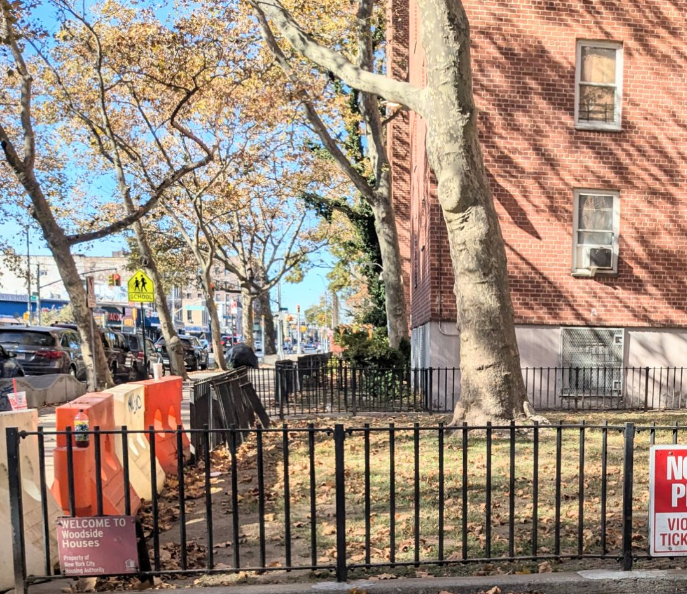
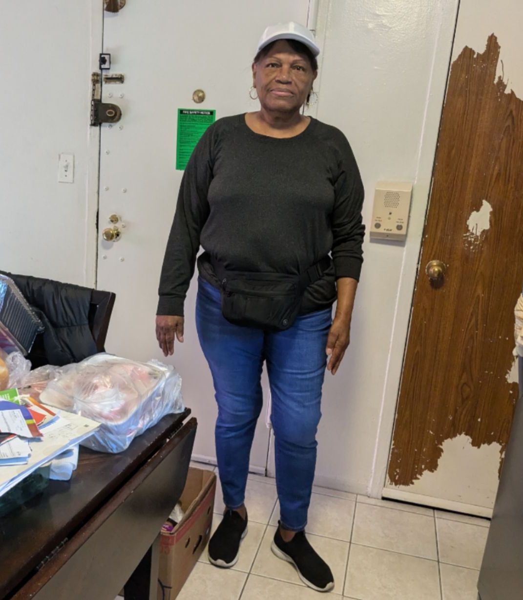

Residents of NYCHA Woodside Houses React to 2024 Rating
Welcome to Woodside Houses

This is the entrance to Woodside Houses. A major public housing complex in the city.
Photo taken by Jada Simon
New York City has rated the Woodside Houses in Queens as one of the top city-run housing developments in the five boroughs – but some of its residents give the complex mixed reviews.
Woodside Houses, a cluster of 20 buildings with six stories each on a 22-acre site between 49th and 51st Street off Newtown Road, received a 90 this year after an annual review of the New York City Housing Authority’s developments for health and safety standards. It was the second-highest rating awarded out of the roughly 2,400 developments run by NYCHA. The highest score, 93, went to Latimer Gardens, Queens.
The score came as a shock to some residents who believe there is still a lot to be done to improve living conditions. Some said the complex, built in 1949, has suffered from water damage in recent years. And some have waited years for tiles and flooring to be updated or repaired.
Meet George Velazquez, a long-time resident of Woodside Houses as he tells us about a hard time living in the complex
George Velazquez, 30, is a resident of Woodside Houses as well as a freelance photographer.
Photo taken by Jada Simon
“There's been times my building has flooded because of construction and literally my side of the building we all had wall damage in the bathroom because of water, " said George Velazquez, a 30-year old freelance photographer who has lived in Woodside for 15 years. He said it took over three months for NYCHA to repair the damage, which had become moldy while waiting. Velazquez said he thinks NYCHA had multiple requests for the same kind of repairs, which led to delays.
NYCHA, the largest public housing authority in the U.S., has been struggling for decades to upgrade and renovate its aging housing stock. The majority of its roughly 175,000 affordable units were built before 1970. The average age of NYCHA buildings is 60 years old, according to the agency. NYCHA has estimated it will need $78 billion to address all its outstanding repair issues, many of which are urgent. The repair backlog has also added to the city’s overall housing shortage, as new tenants must be waitlisted until old, damaged apartments can be renovated before moving in.
NYCHA Audit Committee members, a group that verifies NYCHA's financial reports and recommendation for board approval, along with participants of customer satisfaction surveys, expressed concerns regarding repairs and NYCHA's oversight over its contractors.
“Thirty percent of those who rated the work performed by contractors gave a rating of 'poor,' and fewer than half rated the work performed as 'good' or better ('very good' or 'excellent'),”according to Brad Lander's latest report on NYCHA's oversight of contractor repairs.
The audit also noted that NYCHA did not seek collection of feedback from residents on repairs conducted on their apartments.
Woodside Houses received a score of 90 based on the criteria set out by National Standards for the Physical Inspection of Real Estate, which determines the health and safety of housing units. NSPIRE was created by the U.S. Department of Housing and Urban Planning. HUD updated its NSPIRE ratings in 2024, the first time in 20 years the agency had done so.
Sometimes clusters of garbage like this one can be found throughout the complex

Some of the buildings have garbage right on the sides of them. Though the garbage is no longer directly in front of the entrances, as Velazquez said the garbage is still there, it's just been pushed in a different direction.
Photo taken by Jada Simon
In some cases, repairs made by NYCHA can actually create secondary issues. When it went into the Woodside Houses to repair water damage, the rat population grew, said Velazquez. Once construction stopped, the issue improved, he said.
But garbage remains a source of concern for many residents. Regina Fred, a 72-year-old resident of Woodside Houses, said she sees rats and roaches in the complex bins. Some residents just leave bags of trash in front of buildings within the complex, according to residents.
Meet Maria Smith a retired resident of Woodside Houses. She says that keeping the complex cleanly is the job of the residents.

Maria Smith is a 73-year-old resident of Woodside Houses and retired home health aide.
Photo taken by Jada Simon
Woodside resident Maria Smith said she's noticed that NYCHA is keeping the complex clean, but residents are often the source of problems.“Some people, they like to mess, '' not blaming NYCHA because they come and pick up the garbage, and they have a place where they put the garbage, and the people don't put the garbage where they belong,”said Smith, a 73-year-old resident and retired home health aide.“I'm not blaming NYCHA for that. I'm blaming the people.”